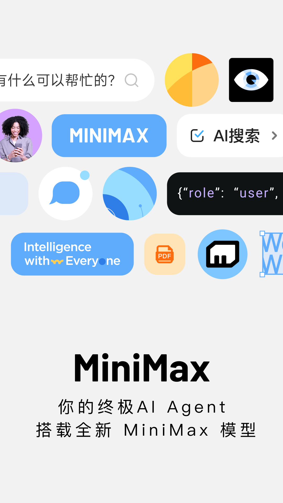
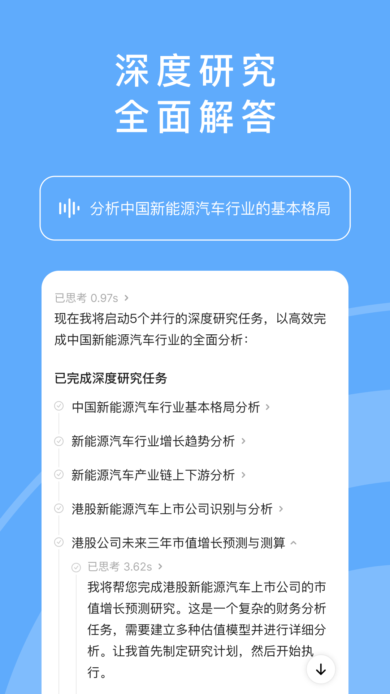

MiniMax 新手入门：从零到跑通你的第一个 AI Agent
还没碰过 AI Agent？这篇带你从完全不懂到能上手派任务——不用装环境、不用写代码，五分钟让 AI 帮你干活。
这篇能带你从完全不懂到用起来。不需要任何 AI 基础，也不用装 Python 或写代码，跟着走就行。
它到底是干嘛的？一个生活化类比
想象你身边有个效率超高的助理——你跟它说一句话，它能自己上网搜资料、整理成报告、甚至帮你做 PPT。而且这个助理二十四小时待命，干活不喊累。这就是 MiniMax官网 在做的事。
但它不是普通的聊天机器人。聊天机器人是你问一句它答一句，MiniMax 是你给它一个目标，它自己拆解步骤、并行推进、最后交付成果。比如你说"帮我分析一下新能源汽车行业的格局"，它不会只给你一段回答，而是会拆成好几个子任务同时调研——找增长趋势、看产业链、识别上市公司、预测市值，全部跑完后汇总成一份像样的报告。
简单说：聊天机器人给你"答案"，MiniMax 给你"结果"。

五分钟上手：从下载安装到第一次跑通
好消息是整个流程非常丝滑，五步搞定。
第一步：下载安装
打开官方下载，按你的设备选版本就行——Windows、Mac、手机端都有。安装包不大，下完双击一路"下一步"就能装好，不需要配置任何东西。
第二步：注册登录
首次打开会提示注册。手机号或邮箱都行，注册完系统会送免费积分——新用户有 3 天有效期，领到就赶紧派任务试手，别攒着过期了可惜。
第三步：逛一下主界面
界面很干净，左边是历史会话列表，中间大大的输入框就是你的操作台。第一次打开你会看到一些推荐任务，比如"帮我做个旅行计划"或者"翻译一篇文章"，点一下就能直接体验。

第四步：派你的第一个任务
别纠结措辞，直接用大白话。比如你可以输入：
帮我整理一份关于咖啡产地的小报告，重点说云南普洱和埃塞俄比亚的区别，300 字左右，加个表格对比一下。
回车（或者点发送按钮）之后，你会看到输入框下方出现一条"正在执行"的状态提示——这时候 Agent 已经在后台开动了。
第五步：等结果、收成果
任务跑完后，交付物会出现在对话里。上面那个例子你会拿到一份带对比表格的小报告，直接可以复制到文档里用。如果不满意，插话让它改就行——比如"表格里再加一列价格区间"，它会接着做。
就这五步。没有代码，没有配置，你已经用上 AI Agent 了。
上手后先玩这三个功能
跑通第一个任务只是开始。这三个功能是新手最值得先碰的，每一个都会让你惊呼"原来 AI 还能这么用"。
第一个：深度研究模式——让 AI 自己写调研报告
这是 MiniMax 的招牌能力。你给它一个研究题目，它不是搜一下给你几段文字，而是启动一个完整的研究项目：拆题、并行调研、交叉验证、汇总出报告。
你会看到什么？面对"分析中国新能源汽车行业的基本格局"这个题目，Agent 不到一秒就规划出五个并行的研究子任务——从行业格局到增长趋势，从产业链到上市公司识别，再到市值预测，每个子任务独立推进、各有状态。全部跑完后汇总成一份完整报告交付给你。
这意味着什么？普通搜索给你的是零散信息，深度研究给你的是一个可直接使用的研究成果。而且它手里的工具箱比你想的多得多——搜索、API 调用、浏览器自动操作（它真的会打开网页帮你查）、还有各种扩展工具，多来源交叉验证的结果比你自己搜半天还靠谱。具体能调哪些工具、怎么给 Agent 下精确指令，可以去翻一下MiniMax文档，里面写得比我清楚。

第二个：PPT 一键生成——从想法到幻灯片只要一分钟
写一份 PPT 通常要花半小时起步：找模板、写大纲、填内容、调排版。现在你只要告诉它你要讲什么、给谁讲、大概几页，它直接给你生成一整套幻灯片。
生成的第一版是网页形式，你可以在预览里快速过一遍——哪里不对直接插话改："第三页换成柱状图""案例部分再加两个"。定稿后一键导出 PPTX，格式质量是官方单独强调的卖点——行业里常见的坑是 AI 生成的幻灯片导出后排版错乱、文字错位，MiniMax 在这一步专门做了优化，导出后可以直接在 PowerPoint 或 WPS 里继续编辑。
第三个：微信/飞书远程使唤——不打开 App 也能派活
这是个容易被忽略但超级实用的功能。桌面端支持把 Agent 绑定到微信、飞书等聊天渠道——绑定之后，你在手机上、在公司的电脑前、甚至在通勤地铁里，都能直接用聊天窗口给 Agent 发指令。
绑定方式很简单：微信扫码，飞书走完授权流程，几秒钟搞定。入口就在桌面端的自动化设置区。绑定之后的定位也很清晰：进度查询、跟进追问、轻量指令适合走聊天渠道——"任务跑完了吗""报告里补一段结论"这类一句话交互特别顺手。需要认真盯任务的时候还是回到桌面端，权限审批、看终端输出这些完整能力只有主界面才有。
一个小贴士：别把 Agent 拉进多人群聊——群成员都可能触发它，个人使用建议先走一对一渠道。
小白的三个常见疑问
这些问题在新用户里出现频率最高，提前知道能省不少时间。
免费积分到底多久过期？
新注册的免费积分只有 3 天有效期。领到就赶紧派任务试手，别想着"等我有空了再用"——等你有空的时候它可能已经过期了。消耗记录可以在界面左下角头像里的 Credits 入口查看，手机端在个人中心。
为什么这次任务扣的积分比上次多？
这是按实际消耗算的，不是按次数。消耗差异通常来自三个原因：任务范围变大了（多搜了几个来源、多跑了几轮迭代）、走了更重的环节（比如联网调研、视频生成都比纯文字问答费）、中途回溯重走了（被回溯的执行已经消耗过，重走再计一次）。想省积分的话，指令里缩小范围比什么都有效——限定来源数量、限定字数、限定轮次，Agent 按你说的范围来就不会瞎烧。
生成的东西能改吗？改坏了怎么办？
完全能改。在对话里插话就行，说清楚改什么、改成什么样。如果改来改去越改越乱，可以用检查点功能回退到之前的版本重来——这个机制相当于给你的任务加了存档，走错了不用从头再来。PPT 这类导出文件也一样，先在预览里定稿再导出，避免反复导。
说在最后
AI Agent 不是用来取代你，而是帮你把那些"不得不做但又不想花时间"的事交出去。跑通第一步之后你会发现，原来很多你觉得自己做不了的事——比如写调研报告、做 PPT、整理资料——现在只需要说一句话就能搞定。
进阶方向的话，可以去看看 MCP 工具扩展——相当于给你的 Agent 装插件，接入更多数据源和能力，玩法会再上一个台阶。